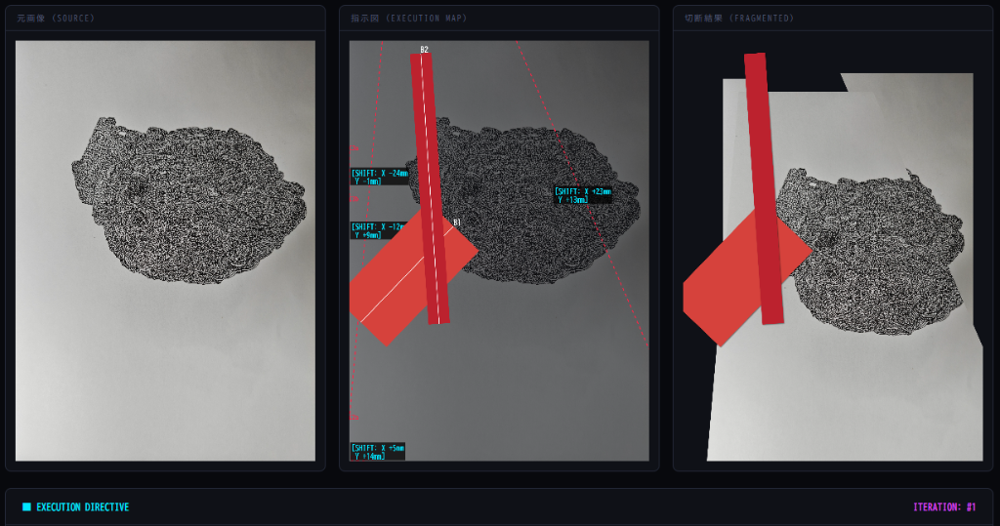
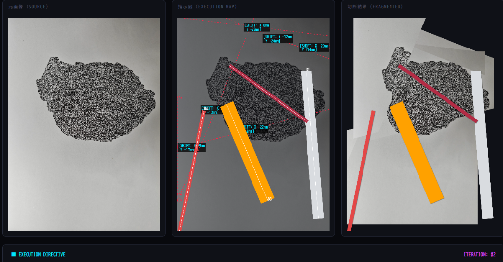
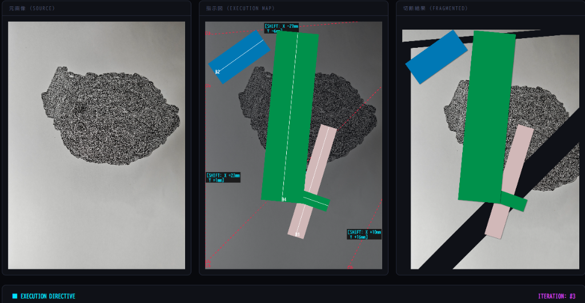
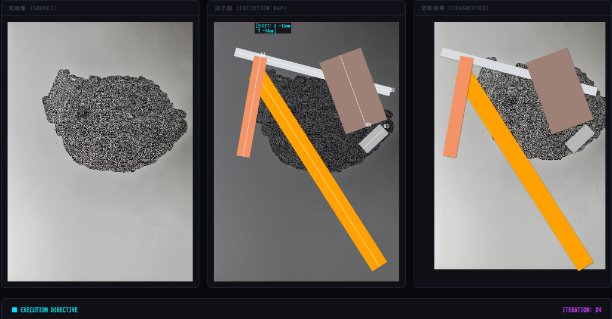

ITERATION: #01 / SEED: 560897457
Execution Protocol — Incision




A generative system for the physical destruction of images. It calculates edge-to-edge incisions and the absolute placement of completely independent color bars to dictate a physical collage execution.
画像の物理的な破壊のための生成システム。画面の端から端までの自律的な直線の切断と、それらから完全に独立した座標へのカラーバーの配置を算出し指示します。
「Execution Protocol — Incision」は、デジタルグリッチやアルゴリズムによる暴力を、直接的に物理的な領域へ持ち込むために設計されたプロセスです。破壊の段階において制作者の意図を完全に放棄し、厳密な数学的プロトコルのみに依存して、紙上の細密画や写真がどのように切断され、再構築されるかを決定します。細密画を生み出すために労働したその同じ手に、今度はその破壊の遂行が命じられる——労働者と管理者が決して分離されることのない、自己管理のショートサーキットです。命令は発行された。実行されないまま、留まる。
The "Execution Protocol — Incision" is a generative system designed to transfer the concept of digital glitch and algorithmic violence directly into the physical realm. By abandoning artistic authorship during the destruction phase, this project relies on a forged protocol that presents itself as strictly mathematical to determine how a physical drawing or photograph is dismantled and reconstructed. The hand that labored to produce the drawing is the same hand the protocol commands to destroy it — a short-circuit of self-management where the worker and the manager are never separated. The command has been issued. It remains unexecuted.
JPEGのバイト単位のデータを操作していた以前のプロジェクトとは異なり、このシステムはアナログな平面を直接の処理キャンバスとして扱います。ジェネレーターは画面の端から端を突き抜ける自律的な直線切断を算出し、同時に、切断された結果を一切考慮せずに完全に独立した座標へ、特定のカラーバーを物理的に配置する指示を出力します。
In contrast to previous iterations that manipulated JPEG byte streams, this system treats the analog surface as its operational canvas. The generator calculates autonomous, edge-to-edge incisions across the image. Randomly selected color bars (derived from physical cutting sheet palettes) are subsequently assigned absolute coordinate positions overlaying the newly fragmented structure.
The cuts would shatter the drawn surface; the color tape would be blindly applied according to the coordinates. The incision is not carried out. The coordinates remain without a destination. What exists is the indifferent command log, and nothing else.
直線による切断は描かれた図像を物理的に破砕し、カラーテープは座標指示のみに従って盲目的に貼り付けられる——はずだった。切断は行われない。座標は宛先のないまま残る。ここに存在するのは、無関心なコマンドログのみである。